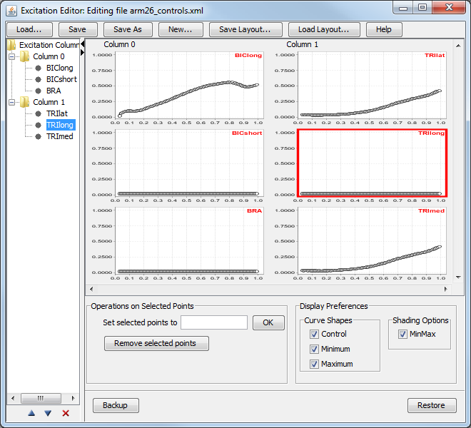
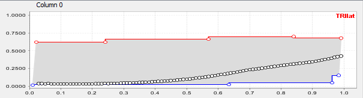

The topics covered in this section include:
Overview
The excitation tree and the excitation grid panel are the parts of the Excitation Editor that allow you to control the layout of the muscle excitations (or controls, in general) that are displayed. They are discussed together in this section because they represent the same thing. The excitation tree, which occupies the left side of the window, shows the names and layout of the excitations displayed in the excitation grid panel in a manageable format. You can collapse and expand the excitation tree by clicking the arrows at the top of the vertical divider between the excitation tree and the excitation grid panel.
Excitations are arranged into columns so that you can display excitations in groups based on name or functionality. For example, one common arrangement when studying walking is to arrange excitations into two columns, one for each leg. Another reasonable arrangement is to put different muscle groups of interest into different columns. Columns can have different number of excitations.
Columns have labels, which are displayed at the top of these columns in the excitation grid panel. Default names for these columns are "Column 0", "Column 1," etc., but you can change these names (see Excitation Tree Drop Down (Context) Menu).
The excitation tree is a simple tree structure with a node/folder for each column and leaf nodes for individual excitations. The order of the nodes in the tree corresponds to the display order of the excitations in the excitation grid panel. Columns are displayed left to right, and excitations within a column are displayed in order from top to bottom. The figure below shows an example with two columns, so you could for example use one column for the left glut muscles and the other one for the right glut muscles for easier visual comparison.

Excitation Tree Drop Down (Context) Menus
Modifications to the excitation layout can be made by using the drop down (context) menus associated with the excitation tree.
| add new column | Right mouse click on the root node of the excitation tree and select Add Column…. A new column will be added to the excitation grid panel with the default name "Column i." A filtering dialog box (see Selection Filtering Window) will then appear, so that you can pick excitations to display in the newly added column. Currently displayed excitations are not offered for selection in the filtering dialog box. |
| add excitation | To pick more excitations and append them to an existing column, right mouse click on the node corresponding to that column. Select Append. Although the number of excitations per column is originally limited to 8, you can use this option to have more than 8 entries per column. |
| rename column | To change the display name of a column to a more expressive name (e.g., "Left side" or "Extensors"), right mouse click on the node in the excitation tree that corresponds to that column and select Rename. |
| reorder excitations | Excitations can be moved up and down inside the same column or across columns using standard drag-and-drop operations in the excitation tree. |
| select excitation | Excitations are selected in the excitation tree by just clicking on them. Selected excitations are indicated by a red border (see figure above). |
| delete excitation | To delete an excitation, select the excitation(s) and then press the button at the bottom of the Excitation Editor, below the excitation tree. These excitations are then removed from the display in the Excitation Editor. |
Each entry of the Excitation Grid is an excitation panel (figure below). An excitation panel is very similar to the panel used by the Function Editor with the difference that at most one set of curves is displayed (excitation curve plus min and max curves, which describe the allowed minimum and maximum values, respectively, for the excitation curve). To add control points to either the excitation or the min or max curves:
Excitation Panel
Excitation panels, such as the one in this figure, are organized in columns in the Excitation Grid. Each excitation panel shows a control curve (black). It may also show a maximum curve (red) and a minimum curve (blue). The control points for these curves appear as white circles. The display of the control points is controlled by checkboxes in the Curve Shapes section of the Display Preferences panel. In this example, the checkbox for Control is unchecked, so control points do not appear for the control curve. The gray shading between the minimum and maximum curves appears, as shown here, if the MinMax checkbox in the Shading Options section is checked.
|  |
|
|---|
One more option available in the context menu, which is accessed by right clicking in an excitation panel, is the ability to load data from an external file and overlay it on top of an excitation panel. This could be useful when comparing excitations to recorded EMG data.
Next: Excitation Editor Control Panel
Previous: Opening and Restoring Excitation Editor
Home: Excitation Editor
{kind=link}
{kind=link}
{kind=link}